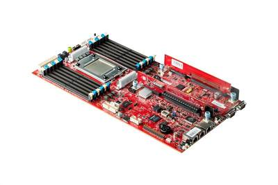

2017-03-09 - Nº 97

Editorial
Esta é a Newsletter Nº 97 que se apresenta com o mesmo formato que as anteriores. Se gostar da Newsletter partilhe-a!
Todas as Newsletters encontram-se indexadas no link.
Esta Newsletter tem os seguintes tópicos:
Faz hoje anos que nascia em 1934, na Rússia, Yuri Gagarin. Este foi o primeiro ser humano a sair da atmosfera terrestre e a completar uma órbita à volta da Terra a 12 de Abril de 1961, na nave espacial Vostok. Faz hoje também anos que nascia Edward Goodrich Acheson. Este químico Norte-americano natural da Pensilvânia é o inventor do processo com o seu nome - processo Acheson. Este processo é o método que ainda é usado para sintetizar moissanite e grafite. A moissanite é considerada o segundo material mais duro da natureza. Por fim, também Walter Kohn nasceu a 9 de Março, no ano de 1923. Este físico e químico teórico nascido em Viena de Áustria e naturalizado Norte-americano ficou conhecido pelo seu papel no desenvolvimento da teoria funcional da densidade. Esta tornou possível calcular a estrutura eletrónica quântica através de equações envolvendo a densidade eletrónica (em vez da função de onda de muitos corpos). Esta simplificação computacional levou a cálculos mais precisos em sistemas complexos, e tornou-se uma ferramenta essencial para a ciência dos materiais, física de fase condensada e a física química de átomos e moléculas.
Esta semana ficámos a saber que Jeff Bezos tem um plano para estabelecer um sistema parecido com a Amazon para uma futura presença humana na Lua. Ficámos igualmente a saber que a Qualcomm está a colaborar com a Microsoft para a aceleração de serviços Cloud recorrendo a sistemas ARM baseados na plataforma de 10nm Qualcomm Centriq 2400. Por fim, a IBM está a construir o primeiro Computador Universal Quântico para o meio empresarial e para utilização cientifica.
Na Newsletter desta semana apresentamos diversos projetos de maker assim como alguns modelos 3D que poderão ser úteis. É apresentado também a revista newelectronics de 28 de Fevereiro.
 João Alves ([email protected])
João Alves ([email protected])
O conteúdo da Newsletter encontra-se sob a licença  Creative Commons Attribution-NonCommercial-ShareAlike 4.0 International License.
Creative Commons Attribution-NonCommercial-ShareAlike 4.0 International License.
Novidades da Semana ^
An exclusive look at Jeff Bezos’s plan to set up Amazon-like delivery for ‘future human settlement’ of the moon
"More than four decades after the last man walked on the lunar surface, several upstart space entrepreneurs are looking to capitalize on NASA's renewed interest in returning to the moon, offering a variety of proposals with the ultimate goal of establishing a lasting human presence there. The commercial sector's interest comes as many anticipate support from the Trump administration, which is eager for a first-term triumph to rally the nation the way the Apollo flights did in the late 1960s and early 1970s. The latest to offer a proposal is Jeffrey P. Bezos, whose space company Blue Origin has been circulating a seven-page white paper to NASA leadership and President Trump's transition team about the company's interest in developing a lunar spacecraft with a lander that would touch down near a crater at the south pole where there is water and nearly continuous sunlight for solar energy. The memo urges the space agency to back an Amazon-like shipment service for the moon that would deliver gear for experiments, cargo and habitats by mid-2020, helping to enable “future human settlement” of the moon. (Bezos, the founder of Amazon.com, owns The Washington Post.)" [...]

Qualcomm Collaborates with Microsoft to Accelerate Cloud Services on 10nm Qualcomm Centriq 2400 Platform
"At Open Compute Project (OCP) Summit 2017, Qualcomm Incorporated (NASDAQ: QCOM), through its subsidiary, Qualcomm Datacenter Technologies, Inc. (QDT), today announced a collaboration with Microsoft to accelerate next generation cloud services on its 10 nanometer Qualcomm Centriq™ 2400 platform. This collaboration qcomm_popup.jpgwill span multiple future generations of hardware, software and systems. With the goal of enabling a variety of cloud workloads to run on the Microsoft Azure cloud platform powered by Qualcomm Centriq 2400 server solutions, QDT today submitted a server specification using its advanced 10 nanometer Qualcomm Centriq 2400 platform to OCP. The Qualcomm Centriq 2400 Open Compute Motherboard server specification is based on the latest version of Microsoft’s Project Olympus. Moreover, QDT today conducted the first public demonstration of Windows Server, developed for Microsoft’s internal use, powered by the Qualcomm Centriq 2400 processor." [...]
IBM Building First Universal Quantum Computers for Business and Science
"IBM announced today an industry-first initiative to build commercially available universal quantum computing systems. “IBM Q” quantum systems and services will be delivered via the IBM Cloud platform. While technologies that currently run on classical computers, such as Watson, can help find patterns and insights buried in vast amounts of existing data, quantum computers will deliver solutions to important problems where patterns cannot be seen because the data doesn’t exist and the possibilities that you need to explore to get to the answer are too enormous to ever be processed by classical computers." [...]
Outras Notícias
- New PIC18 Family Offers a Versatile Array of Core Independent Peripherals to Simplify Complex Designs
- The Hangprinter: A Frameless 3D Printer
- NVIDIA and Microsoft Boost AI Cloud Computing with Launch of Industry-Standard Hyperscale GPU Accelerator
- Announcing Google Cloud Video Intelligence API, and more Cloud Machine Learning updates
- Microchip Simplifies the Development of Smart, Connected and Secure Solutions with a Hardware Cryptography-Enabled Microcontroller
- GOODYEAR shares concepts, technology for urban mobility at Geneva International Motor Show
- Latest OCP Innovations from Intel Support Growing Demands of Hyper Scale Data Centers
- NXP Launches the World’s Smallest Single-chip SoC with Integrated Microcontroller for Drones, Robots, Power Tools, DC Fan and Healthcare Applications
- Surrounded by AI Devices that Do Everything from Flying to Farming, NVIDIA Launches Jetson TX2
Ciência e Tecnologia ^
Computing with Biochemical Circuits Made Easy
"Electronic circuits are found in almost everything from smartphones to spacecraft and are useful in a variety of computational problems from simple addition to determining the trajectories of interplanetary satellites. At Caltech, a group of researchers led by Assistant Professor of Bioengineering Lulu Qian is working to create circuits using not the usual silicon transistors but strands of DNA. The Qian group has made the technology of DNA circuits accessible to even novice researchers—including undergraduate students—using a software tool they developed called the Seesaw Compiler. Now, they have experimentally demonstrated that the tool can be used to quickly design DNA circuits that can then be built out of cheap "unpurified" DNA strands, following a systematic wet-lab procedure devised by Qian and colleagues. A paper describing the work appears in the February 23 issue of Nature Communications. Although DNA is best known as the molecule that encodes the genetic information of living things, they are also useful chemical building blocks. This is because the smaller molecules that make up a strand of DNA, called nucleotides, bind together only with very specific rules—an A nucleotide binds to a T, and a C nucleotide binds to a G. A strand of DNA is a sequence of nucleotides and can become a double strand if it binds with a sequence of complementary nucleotides." [...]
New research could trigger revolution in computer electronics manufacturing
"Researchers from the University of Exeter have developed an innovative new method to engineer computer chips more easily and cheaper than conventional methods. The discovery could revolutionise the production of optoelectronic materials – or devices that produce, detect and control light – which are vital to the next generation of renewable energy, security and defence technologies, the researchers said. The research is published in the respected journal, Scientific Reports." [...]
Artificial data give the same results as real data — without compromising privacy
"Although data scientists can gain great insights from large data sets — and can ultimately use these insights to tackle major challenges — accomplishing this is much easier said than done. Many such efforts are stymied from the outset, as privacy concerns make it difficult for scientists to access the data they would like to work with. In a paper presented at the IEEE International Conference on Data Science and Advanced Analytics, members of the Data to AI Lab at the MIT Laboratory for Information and Decision Systems (LIDS) Kalyan Veeramachaneni, principal research scientist in LIDS and the Institute for Data, Systems, and Society (IDSS) and co-authors Neha Patki and Roy Wedge describe a machine learning system that automatically creates synthetic data — with the goal of enabling data science efforts that, due to a lack of access to real data, may have otherwise not left the ground. While the use of authentic data can cause significant privacy concerns, this synthetic data is completely different from that produced by real users — but can still be used to develop and test data science algorithms and models." [...]
Dual-function nanorod LEDs could make multifunctional displays
"Cellphones and other devices could soon be controlled with touchless gestures and charge themselves using ambient light, thanks to new LED arrays that can both emit and detect light. Made of tiny nanorods arrayed in a thin film, the LEDs could enable new interactive functions and multitasking devices. Researchers at the University of Illinois at Urbana-Champaign and Dow Electronic Materials in Marlborough, Massachusetts, report the advance in the Feb. 10 issue of the journal Science." [...]
Brain-controlled robots
"For robots to do what we want, they need to understand us. Too often, this means having to meet them halfway: teaching them the intricacies of human language, for example, or giving them explicit commands for very specific tasks. But what if we could develop robots that were a more natural extension of us and that could actually do whatever we are thinking? A team from MIT’s Computer Science and Artificial Intelligence Laboratory (CSAIL) and Boston University is working on this problem, creating a feedback system that lets people correct robot mistakes instantly with nothing more than their brains. A feedback system developed at MIT enables human operators to correct a robot's choice in real-time using only brain signals." [...]
Steering A Turtle With Your Thoughts
"Researchers at the Korea Advanced Institute of Science and Technology (KAIST) have developed a brain-computer interface (BCI) that can control a turtle using human thought. Their findings have been published in the Journal of Bionic Engineering. Unlike previous research—most notably in insects—that has tried to control animal movement by applying invasive methods Professors Lee Phill-Seung and Jo Sungho of KAIST propose a conceptual system that can guide an animal’s moving path by controlling its instinctive escape behavior. They chose a turtle because of its cognitive abilities as well as its ability to distinguish different wavelengths of light. Specifically, turtles can recognize a white light source as an open space and so move toward it. They also show specific avoidance behavior to things that might obstruct their view. Turtles also move toward and away from obstacles in their environment in a predictable manner." [...]
IBM Researchers Store Data on World’s Smallest Magnet -- a Single Atom
" IBM today announced it has created the world’s smallest magnet using a single atom – and stored one bit of data on it. Currently, hard disk drives use about 100,000 atoms to store a single bit. The ability to read and write one bit on one atom creates new possibilities for developing significantly smaller and denser storage devices, that could someday, for example, enable storing the entire iTunes library of 35 million songs on a device the size of a credit card. Today’s breakthrough builds on 35 years of nanotechnology history at IBM, including the invention of the Nobel prize-winning scanning tunneling microscope. Earlier this week, IBM announced it will be building the world’s first commercial quantum computers for business and science. Future scanning tunneling microscope studies will investigate the potential of performing quantum information processing using individual magnetic atoms." [...]
Language learning robot could advance autonomous vehicles, help emergency responders in the future
"A Purdue University researcher and his team are developing technology to give robots the ability to learn language. A team led by Jeffrey Mark Siskind, associate professor in Purdue’s School of Electrical and Computer Engineering, has developed three algorithms that allow a wheeled robot to learn the meanings of words from example sentences that describe example paths taken by the robot, to use the words to generate a sentence to describe a path of movement, and to comprehend the sentence in order to produce a new path of movement." [...]
Steering A Turtle With Your Thoughts
"Researchers at the Korea Advanced Institute of Science and Technology (KAIST) have developed a brain-computer interface (BCI) that can control a turtle using human thought. Their findings have been published in the Journal of Bionic Engineering. Unlike previous research—most notably in insects—that has tried to control animal movement by applying invasive methods Professors Lee Phill-Seung and Jo Sungho of KAIST propose a conceptual system that can guide an animal’s moving path by controlling its instinctive escape behavior. They chose a turtle because of its cognitive abilities as well as its ability to distinguish different wavelengths of light. Specifically, turtles can recognize a white light source as an open space and so move toward it. They also show specific avoidance behavior to things that might obstruct their view. Turtles also move toward and away from obstacles in their environment in a predictable manner." [...]
HotFlex: Post-print Customization of 3D Prints Using Embedded State Change
"While 3D printing offers great design flexibility before the object is printed, it is very hard for end-users to customize a 3D-printed object to their specific needs after it is printed. We propose HotFlex: a new approach allowing precisely located parts of a 3D object to transition on demand from a solid into a deformable state and back. This approach enables intuitive hands-on remodeling, personalization, and customization of a 3D object after it is printed. We introduce the approach and present an implementation based on computer-controlled printed heating elements that are embedded within the 3D object. We present a set of functional patterns that act as building blocks and enable various forms of hands-on customization. Furthermore, we demonstrate how to integrate sensing of user input and visual output. A series of technical experiments and various application examples demonstrate the practical feasibility of the approach." [...]
The quest to crystallize time
"Christopher Monroe spends his life poking at atoms with light. He arranges them into rings and chains and then massages them with lasers to explore their properties and make basic quantum computers. Last year, he decided to try something seemingly impossible: to create a time crystal. The name sounds like a prop from Doctor Who, but it has roots in actual physics. Time crystals are hypothetical structures that pulse without requiring any energy — like a ticking clock that never needs winding. The pattern repeats in time in much the same way that the atoms of a crystal repeat in space. The idea was so challenging that when Nobel prizewinning physicist Frank Wilczek proposed the provocative concept1 in 2012, other researchers quickly proved there was no way to create time crystals. But there was a loophole — and researchers in a separate branch of physics found a way to exploit the gap. Monroe, a physicist at the University of Maryland in College Park, and his team used chains of atoms they had constructed for other purposes to make a version of a time crystal2 (see 'How to create a time crystal'). “I would say it sort of fell in our laps,” says Monroe." [...]
Modelos 3D ^
Com a disponibilidade de ferramentas que permitem dar azo a nossa imaginação na criação de peças 3D e espaços como o thingiverse para as publicar, esta rubrica apresenta alguns modelos selecionados que poderão ser úteis.
Customizable threaded rounded box
"This is a customizable threaded rounded box. Special thanks to aubenc, which provided the required library on http://www.thingiverse.com/thing:8796 You can customize the inner diameter of the box. Be aware that the outer diameter will be bigger due to the thread width." [...]
Back to Basics Drafting Set
"This Thing contains all you'll need for school. From graphing to drawing geometrical shapes to helping you create that book shelf in shop class, this set has got you covered. Measure everything from distances and radii in centimeters and inches, to angles and even weights! The ruler is a combination scale, commonly used for drafting. It's got 4 scales, a 1:10 and 1:50 engineering scale, and a 1:100 and 1:500 metric scale. The good thing about these scales is that you can use the 1:10 scale as a standard uscs 6 inch ruler, and the 1:100 as a 15 cm ruler. The pencil topper includes 2 different toppers which you can combine to create a compass for drawing circles. The one I printed out works ok if you can hold everything still while you draw your circle. The other topper just attaches to the first one and spins... because reasons. The pencil case has two 30-60-90 triangles that can be used to draw straight lines and angles. In addition, the triangles serve as templates to measure and draw several metric and uscs radii. The handle is a secondary protractor/ruler and can be combined with the pencil topper to measure or draw specific angles. The handle slides onto the peg on the covers and the covers snap into the base. Thanks for reading and I hope you like it!" [...]
Documentação ^
A documentação é parte essencial do processo de aprendizagem e a Internet além de artigos interessantes de explorar também tem alguma documentação em formato PDF interessante de ler. Todos os links aqui apresentados são para conteúdo disponibilizado livremente pelo editor do livro.
newelectronics 28 Fevereiro 2016
"New Electronics is a fortnightly magazine focusing on technological innovation, news and the latest developments in the electronics sector. Downloadable as a digital page turner or pdf file, or offered as a hard copy, the New Electronics magazine is available in a format to suit you." [...]
Projetos Maker ^
Diversos Projetos interessantes.
How to Make Arduino Based CNC Machine at Home
"Make a CNC Machine from old DVD writer." [...]
Pool Fill Control
"A system to monitor my pool sensors and refill my pool when necessary. Monitors water level & temp, pH, ORP, and power consumption." [...]
Electronic Ultrasonic Emitter - Basic Version
"Hey up there! Here's my new basic project for all ages! I am here again with another Arduino Nano project. Today we are going to create a device that emits ultrasonic waves in the air that could be possibly repelled mosquitoes, cockroaches, rats or even create a dog whistle. This is a multi-purpose project with Arduino Nano! Come on, go ahead and read some information below. This is also known as The Project E.U.E or Electronic Ultrasonic Emitter with a version of basic. This is a traditional stuff device that could possibly repel mosquitoes, cockroaches, rats or even use as a dog whistle. The Project E.U.E consists of 4 electronic components including the 2 pin jumper and the black wire. The project is controlled by a microcontroller which is the Arduino Nano Atmega 328P. It has one speaker (piezo passive buzzer) that emits frequency from 20Khz to 170KHz (the real problem here is that the Nano has only 65535 maximum frequency so that this project emits frequency from 20KHz to 65KHz in reality). These ranges are safe and not annoying because it is completely no noise from this device. It has a light indicator (besides the LED indicator on the Arduino Nano) which is the RGB Module. The RGB module is optional it's up to you if you want to have an indicator to your device because, for me, it is a lot easier to recognize my working device at night when it's dark. I made it blinky to feel like I am watching blinky Fireflies at night lol." [...]
AiLight – A hackable RGBW light bulb
"Some weeks ago a tweet by Manolis Nikiforakis (@niki511) with the #ESP8266 hashtag drew my attention. Manolis had just received a “smart lamp” branded by Ai-Thinker, the AiLight. Yes, the same Ai-Thinker that has sold millions of ESP8266 based modules. Chances were it had an ESP8266 microcontroller inside. Too good not to buy one and take a look at the inside. Manolis shared the link where he bought his at Ebay for a bit more than USD 10 plus shipping. Unfortunately it’s out of stock there and there are amazingly few other places where you can buy it. I only found the same product with prices from 12 to 18€ at Ebay as DIY Smart Wifi Light Bulb [Ebay] or at Aliexpress sold as “DIY Wifi LED Bulb E27 5W AC110-240V lampada LED Dimmable Bulb Lamp Remote Control Led Spot Light for iPhone Android Phones” or “1Pcs E27 Dimmable LED Light Bulb Smart Wireless Wifi AC 110V 220V LED Corn Lamp Cold White Warm White Dimming LED Spotlight” [Aliexpress]. Don’t you love those seo-ugly names?" [...]
Custom firmware Hue lights
"In my previous posts I described how I was able to connect a Mesh Bee with cloned firmware to a Philips Hue and how the cloned firmware provided me with the key to connecting custom firmware to my Philips Hue. For the past few weeks I have been doing just that, creating custom firmware that connects to a Philips Hue. Using the NXP Light Link demo project as starting point, I managed to created two custom binaries, one for a monochrome dimmable light and one for a dimmable color light. Both binaries use the PWM output of the JN5168 for controlling the levels, which makes them suitable for driving led’s directly or through an external driver. In this post I describe the hardware, software and process to run the custom binaries (download here) yourself. I will open source the entire project with a future post." [...]
Arduino Traffic Display Using Google Maps API
"In this instructable I'm going to show you how to make a Arduino device that gets traffic data from the Google Maps API and displays it to a screen and will also set the colour of a RGB LED. The project runs on an Wemos D1 Mini (ESP8266) programmed via the Arduino IDE and costs roughly $10 in total to make." [...]
Arduino DIY Light Meter With BH1750 Sensor
"In this Instructable I am going to show you how to build a Light meter with a big Nokia 5110 LCD display using Arduino. Building a Light Meter is a great learning experience. When you finish building this project you will have a better understanding of how light meters work and you are going to see in action how powerful the Arduino platform can be. With this project as a base and the experience gained, you will be able to easily build more complex projects in the future. You can use this project to monitor the lighting conditions of your work enviroment, of your plants and so on. Without any further delay, let's get started!" [...]
Zener Tester
"We will create an electronic device to test the zener diode voltage. First , Theoretically we will learn how the Zener diode work? Let's get started" [...]
Line Follower Robot (PICTO 92)
"Since a lot of our followers asked for a tutorial to guide them to make a basic Robot we decided to provide this instructable that describe a step by step making of LINE FOLLOWER Robot,so you will find all the necessary software and hardware parts to make your own Robot following these steps. Note: In this project the main part which is the PCB design was made using EasyEDA Platform, so refer to the PCB MAKING section to learn more about this step." [...]
Exploiting PSoC4 for fun and profit
"This article explains how I figured out how Cypress's jury-rigged "supervisor" mode in the PSoC4 family works, dumped the secret unreadable SROM, exploited it, and found a way to unlock extra flash in the PSoC4 as well as how you can develop scary rootkits for touchpads and touchscreens that use Cypress chips. I provide the code to do this yourself as well as as much guidance as I possibly can, for now. Along the way I explain how this was all done and what steps it took. This article encompasses a work of about a month." [...]
Green Binary Counter
"I have built a binary counter without using decoder. The diodes do the magic while the materials are: 1-7490 counter, 4-1N914 diodes, 1-555 timer, 2-4.7Kohm, 1-100uF capacitor, and 4-5mm LED's." [...]
Make Your Own SIMPLE 4x4x4 LED Cube
"In this project I will show you how to build a simpler version of a 4x4x4 LED Cube. The driver circuit only consists of an Arduino Uno . Let's get started !" [...]
Fun Cases for Electronic Components
"Putting together a project is one thing, but making it pretty and presentable is a totally different story. But that's what we're here for! We made a collection of component cases to make your project stand out and look awesome! Without wires sticking out and a strong grip that holds the component perfectly. At the moment there are 7 cases for 7 different components supported on circuito.io. So heat up the printer and get to work!" [...]
snapVCC
"snapVCC is a tiny 3.3 V / 5 V voltage regulator that snaps right on top of a 9 volt battery. It is a highly portable and convenient power supply for your electronics projects." [...]
WeatherBot 3000
"This project uses the MKR1000 to connect to the internet and get time and weather. You will need WiFi. It displays time and weather on the 8x8 led display. We use icons to display general weather such as sunny, cloudy, rainy, night and use special icons for special events. Special events include things like Valentines Day, birthdays, anniversaries etc. These are only displayed on the actual day. We have enclosed the project inside a 3d printed box with a removable lid. To start off, collect your parts. Now, you could solder the connector wire directly to the MKR1000 but we added headers as we wanted to test it on a breadboard first." [...]
Really universal soldering controller
"The intention was to build the most universal soldering controller I can think of. It can drive any low voltage (upto 24V) iron with thermocouple or resistive sensor, in series with the heater, or separate. " [...]
Building an RC Car Using a 433 MHz RF Transmitter and Receiver
"In this project, I will be showing you how to create an RC car using a 433 MHz RF transmitter and receiver." [...]
How to Make Arduino Based Digital Tachometer Simple DIY Tutorial
"Let see how to make Arduino based digital Tachometer. Working principle :- IR Sensor get penetrate by motion of motor shaft, signal are transfer from IR Senor module to Arduino. This signal are processed in Arduino according to code loaded on it. Then Arduino transfer signals to LCD Screen to display RPM." [...]
Sphere-o-bot: a Friendly Art Robot
"The Sphere-O-bot is a friendly art robot that can draw on spherical or egg-shaped objects from the size of a ping pong ball to a large duck egg (4-9 cm). The robot is based on the cool original design of Evil Mad Scientist. If you have a 3D Printer and get the ancillary elements (basic hardware + Arduino), you can create this ART robot. The Sphere-O-Bot is a simple 2 axis drawing machine that can draw on most spherical surfaces. You can use it to decorate balls or eggs. This design also features the regular JJrobots electronics (the same we have used in all of our robots). So you can create this robot or any other just simply printing new 3D parts and uploading the appropriate code. Create a B-robot EVO or an iBoardbot after your Sphere-o-bot!" [...]
LED Matrix Wave Moves With Hand
"What makes some shows and some movies are so exciting? The answer is the effects. I loved the luminous lightsabers in Star wars and the fantastic blue suit of superhero Max Steel. When I used some simple LEDs in my project, I discovered that they can color the world and mimic what they do in the shows. So I decided to get into this lovely, fantastic world with something (maybe) new! I created a simple design and made it move with my hand by using my phone and very simple components." [...]
Tiny ESP8266 Breakout Board
"This is a tiny ESP8266 breakout board. I made it because the small breakouts I bought took up the entire breadboard and didn't include basic pullup/pulldown resistors." [...]
That's all Folks!